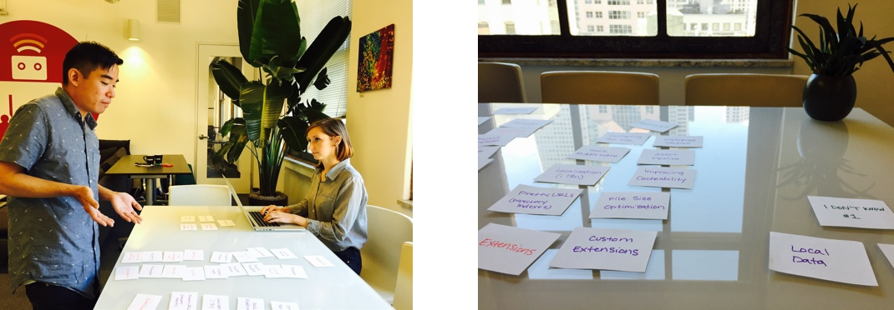

Middleman Site Design
User Research, UX, Visual Design & Branding, Implementation
Middleman is a static site generator using all the shortcuts and tools in modern web development. It's built on Ruby, and can be used to get static sites up and running quickly and painlessly.
Like any good web framework, Middleman has a documentation site that aims to help people understand the tool, use the tool easily, troubleshoot problems, and contribute changes to open-source features. The existing documentation site needed a brand-overhaul, as well as some attention to the overall organization of documentation, messaging, and user experience.
 Middleman site design before the project
Middleman site design before the project
Landing Page UX and Branding

The entire site needed a branding overhaul and attention to user experience. We came up with a new color palette and typography guide, and updated the logo.
The current site tagline was "makes developing websites simple", which didn't fully convey what Middleman could do for users. We brainstormed a succinct tagline for the hero section of the landing page, and then used the rest of the landing page to tell a story about the benefits of using Middleman.
The current navigation was a site-architecture style block of links on the landing page, which was a bit overwhelming for users. We identified that the main purpose of the site for most users was to access documentation, so we created a global navigation bar that highlighted the docs at the top of the page.
Organizing Documentation
Since well-organized and easy to read documentation is the core of the website's purpose, we wanted to take a step back and look at how the docs were organized. We ran a series of card sorting surveys to gather user feedback on the most logical way to group sections of the documentation. We also took special consideration with design decisions like typography, line height, and the way code blocks are displayed.

Illustrations
Since blocks of text and links are hard to scan quickly, we created custom illustrations to use throughout the site, which helped convey information about Middleman.

Implementation: Bourbon & Neat

The site itself is a Middleman site, and the styling was implemented with Bourbon and Neat. We used mixins and variables along with partials for re-usable modules, creating a maintainable front-end.
The site is fully responsive and works across major browsers.
The Launch